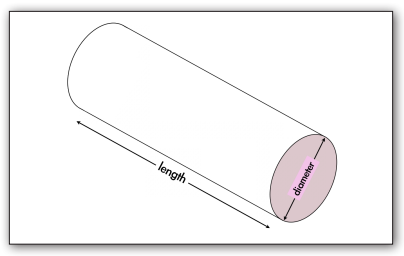
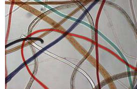

A fibre is the smallest unit making up the fabric of clothing, draper, furniture and carpet. A fibre tends to have a thin diameter and a long length.

Fibres are a form of trace evidence often found at crime scenes where the subject(s) and victim(s) have been in physical contact, such as assault or homicide. Fibre evidence can also be exchanged between a hit-and-run victim and the vehicle that caused the collision. It can be left at the site of the collision when clothing fibres are caught by sharp metal or fragments of glass or paint. Also, clothing fibres from a suspect can become snagged in a screen or glass broken during a break-and-enter.

Various fibres under a microscopeLocating fibres from objects such as carpet, drapery and furniture from the crime scene similar to those from the victim's clothing or upon the clothing of the suspect is important evidence that "places" the suspect at the crime scene. At the crime scene, fibres similar to the suspect's clothing can also be incriminating.
Fibre evidence is of two main types:
1. Natural Fibres: These fibres are derived in whole from plant or animal sources. Animal fibers comprise the majority of the natural fibers encountered in crime laboratory examinations. These include hair coverings from such animals as sheep (wool), goals (mohair, cashmere), camels, llamas and alpacas. Fur fibres include those obtained from animals such as mink, rabbit, beaver and muskrat.
By far the most prevalent plant fibre is cotton. The wide use of undyed white cotton fibers in clothing and other fabrics has made its evidential value almost meaningless, although the presence of dyed cotton in a combination of colors has, in some cases, served to enhance its evidential significance.
2. Man-Made Fibers: Beginning in the early 1900s, these fibers have increasingly replaced natural fibers in garments and fabrics. Most of the fibres currently manufactured are produced solely from synthetic chemicals and are therefore classified as synthetic fibres. These includes nylons, polyesters and acrylics.